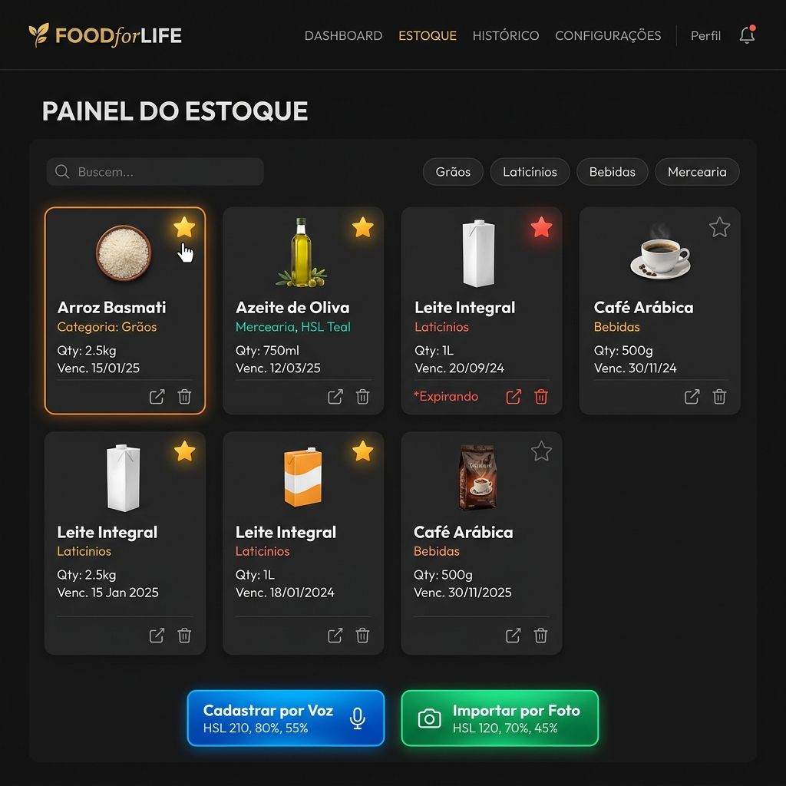
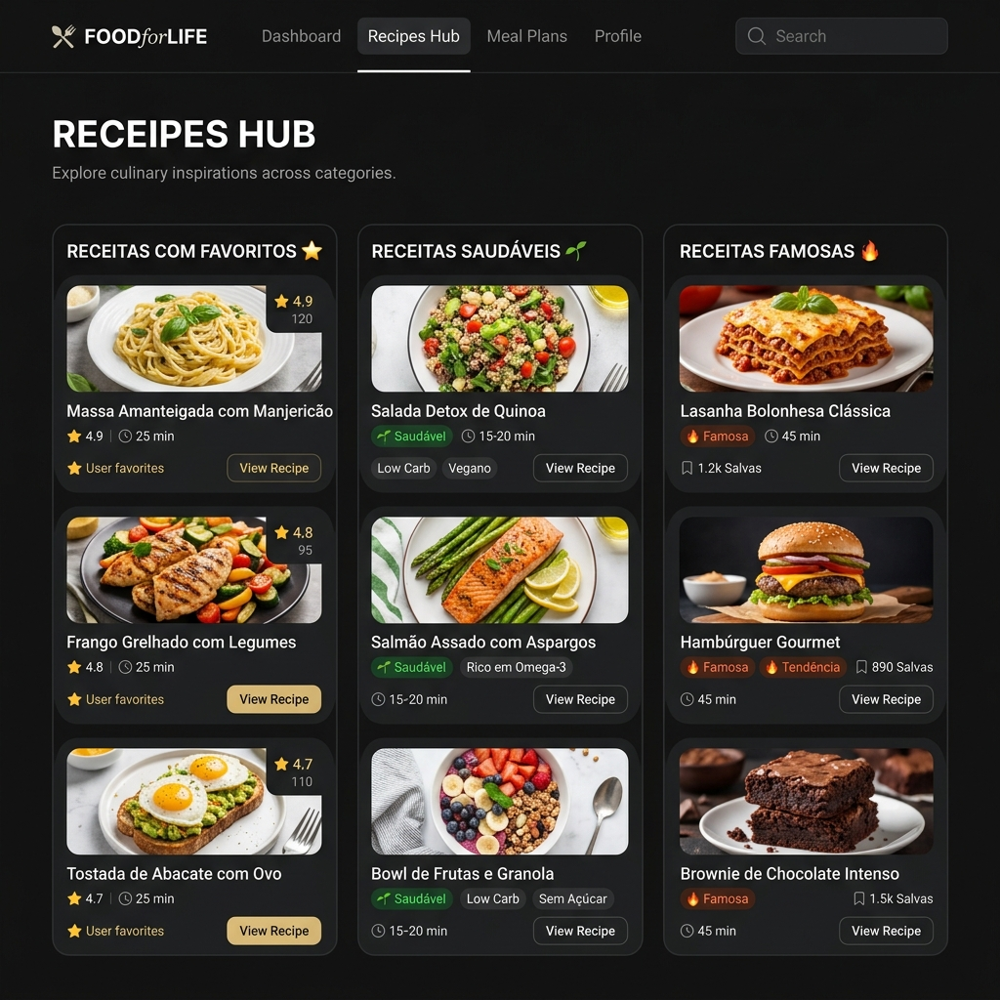
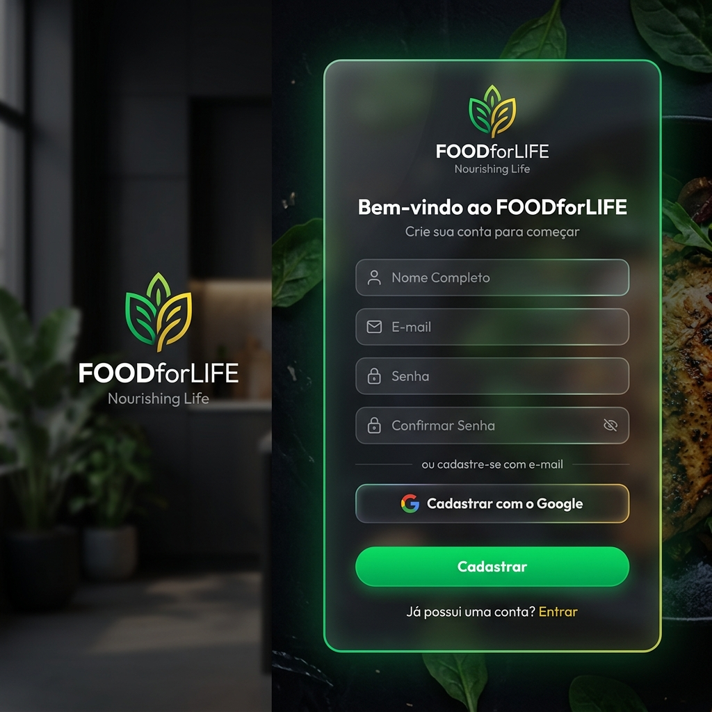

Mockups de Layout Planejados para a Nova Versão Multiplataforma

O novo Dashboard centraliza a despensa inteligente. Conta com opções de cadastro prático (por comando de voz e reconhecimento por foto) e uma interface em grid para acompanhamento do vencimento dos itens. O ícone de favorito (estrela) aparece dinamicamente ao passar o cursor sobre os itens.

Seção dedicada para aproveitamento inteligente dos itens cadastrados. Organizada em três categorias para ajudar a combater o desperdício sugerindo receitas baseadas na sua despensa.

Interface de acesso rápida integrada ao Google Sign-In. Habilita cadastro e login com um clique, sincronizando dados entre dispositivos móveis e navegadores web de forma transparente.